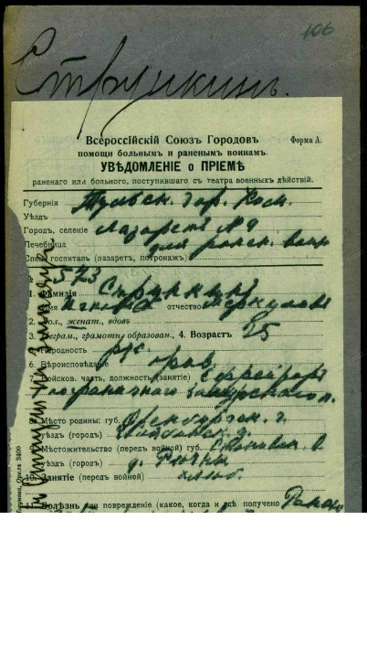
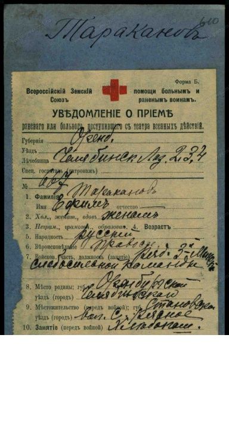
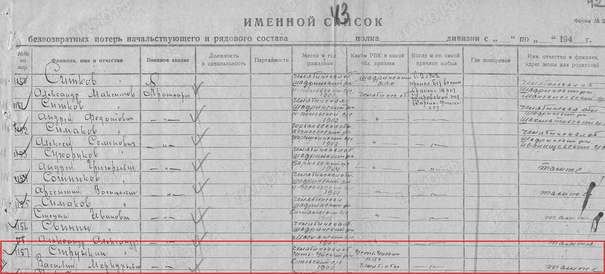
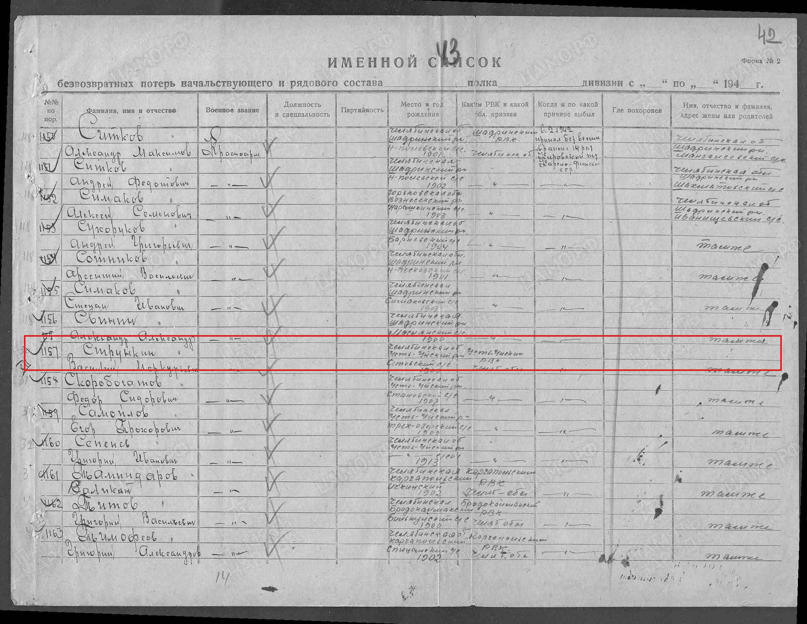
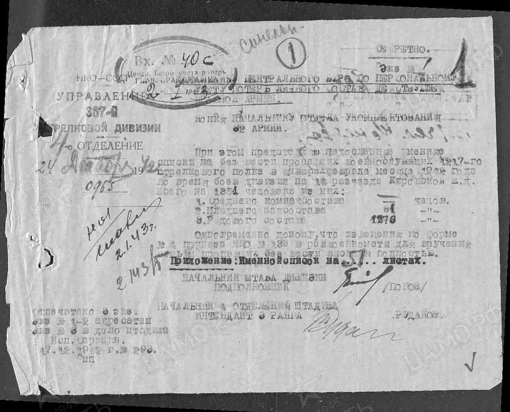
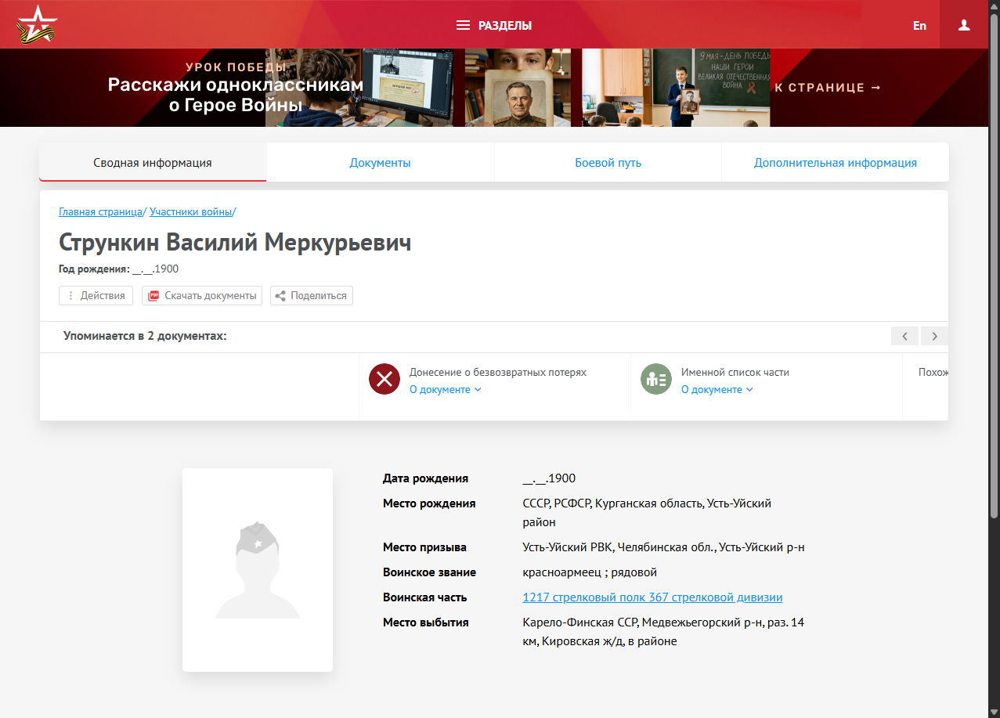
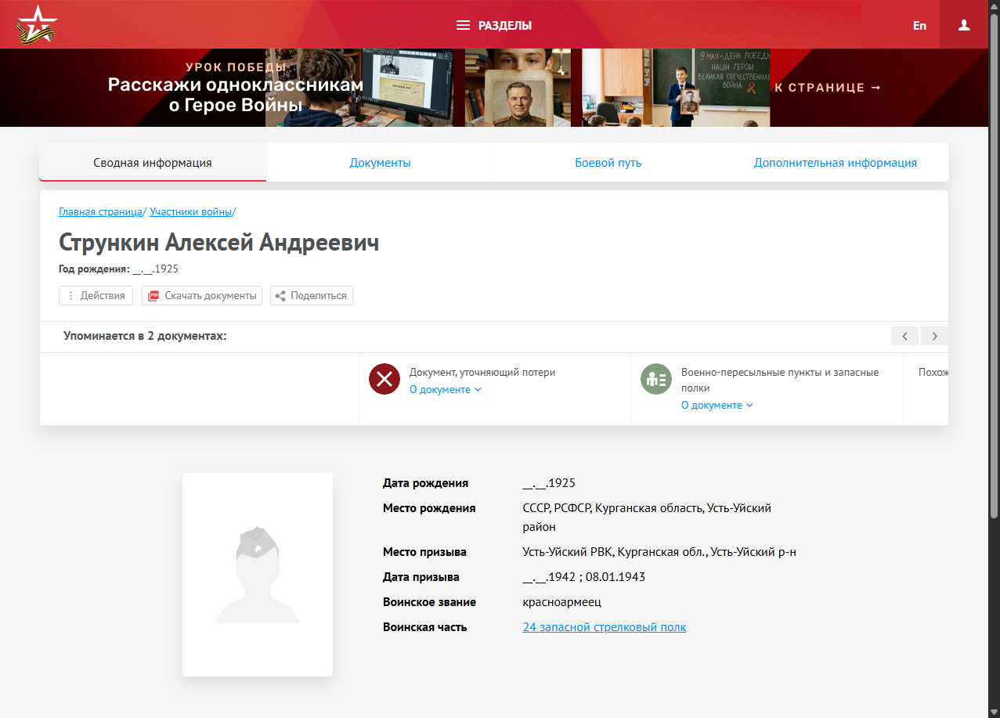

Предыдущее поколение
Меркурий и Мария
Жили в деревне Речной. В метрической записи о рождении Василия Меркурий назван крестьянином, а Мария — его законной женой. В семье выросли сыновья Феодот, Иван, Игнатий, Василий и дочь Пелагия.
История семьи, которую удалось восстановить по метрическим книгам, семейным фотографиям и памяти поколений.
В центре этой семейной истории — Александр Васильевич Стрункин, родившийся, по семейной росписи, в селе Речном в 1924 году. Его отец — Василий Меркурьевич Стрункин. В метрической книге 1900 года найдено рождение Василия: запись называет его родителями крестьянина деревни Речной Меркурия Филиппова Стрункина и Марию Тимофееву.
Схема показывает прямую доказанную родословную линию рода Стрункиных деревни Речной.
В старых источниках встречаются названия «Речная» и «Речнинское», позднее закрепилось «Речное».

В метрических книгах Свято-Троицкого прихода предки этой семейной ветви записаны как крестьяне деревни Речной. Там родился Василий Меркурьевич Стрункин, будущий отец Александра — по семейной росписи.
Жили в деревне Речной. В метрической записи о рождении Василия Меркурий назван крестьянином, а Мария — его законной женой. В семье выросли сыновья Феодот, Иван, Игнатий, Василий и дочь Пелагия.
Родился 28 января 1900 года. Служил красноармейцем в 1217-м стрелковом полку 367-й стрелковой дивизии. Согласно донесению о безвозвратных потерях, пропал без вести 6 февраля 1942 года у 14-го разъезда Кировской железной дороги в Карело-Финской ССР.
Родной дядя деда Саши (1892–1957). Ефрейтор 1-го Заамурского пограничного пехотного полка. Хлебопашец, грамотный. Ранен в бою 30 сентября 1915 года у с. Пилава, лечился в Лазарете № 9 ВСГ Тулы. Вернулся на родину и воспитал шестерых детей.
Родной отец бабушки Зинаиды Ефимовны! Рядовой 3-й Минской слабосильной команды. Грамотный хлебопашец из деревни Речной. Ранен в бою 28 марта 1915 года, эвакуирован в лазарет г. Челябинска. 100% документальное подтверждение предка в РГВИА!
Двоюродный брат деда Саши (род. 1925 в с. Речном), сын Андрея Федотовича и внук Феодота Стрункина. В 17 лет призван на фронт, красноармеец 24-го запасного стрелкового полка. Пал смертью храбрых в декабре 1942 года.
По воспоминаниям, сохранилась старинная фотография: дед Иван Меркурьевич с бородой и ребятишки пошли встречать коров. Иван и Клавдия Стрункины покоятся на родовом кладбище села Речного.
Семейные артефакты с кладбища села Речного. Подписи сохранены по описанию фотоархива.


Сведения собраны из первоисточников государственных архивов (ОГАЧО, РГВИА, ЦАМО РФ):
ОГАЧО, фонд И-226, опись 1, дело 551, лист 111 (внутренняя нумерация лист 6), запись о рождении № 16. В росписи указано: родился 28 января; родители — Меркурий Филиппов Стрункин и Мария Тимофеева. Открыть скан записи .
.
РГВИА, Картотека бюро потерь, Ящик 3237-С, Док. 106; Фонд 16196, Опись 1, Дело 562, лист 82. Ефрейтор 1-го Заамурского пограничного пехотного полка Стрункин Игнат Меркулов (д. Речная Становской волости). Ранен 30.09.1915 у с. Пилава, поступил в Лазарет № 9 ВСГ в Туле. Открыть карточку РГВИА

.РГВИА, Картотека бюро потерь, Ящик 4433-Т, Док. 610. Рядовой 3-й Минской слабосильной команды Тараканов Ефим (д. Речное Становской волости). Ранен 28.03.1915, поступил в Челябинский лазарет. Прямой отец Зинаиды Ефимовны Таракановой! Открыть карточку РГВИА

.Архивные первоисточники: ЦАМО РФ, Фонд 58 (Управление устройства тыла), Опись 18001, Дело 680, кадр 86 (лист 43/42), запись № 1157; Фонд 7863 (1217 сп), Опись 376484с, Дело 3; Карточка героя № 90551585 на портале «Память Народа».
Сведения донесения: Стрункин Василий Меркурьевич, 1900 г.р., уроженец Челябинской обл., Усть-Уйский р-н, Становский с/с (д. Речное). Красноармеец (стрелок), беспартийный, призван Усть-Уйским РВК. Пропал без вести 06.02.1942 в ходе ожесточённых оборонительных боёв 367-й сд в районе 14 разъезда Кировской железной дороги (Карело-Финская ССР, Медвежьегорский р-н). Адрес семьи: «там же» (д. Речное). Извещение формы № 4 выслано в Усть-Уйский РВК для вручения родным.
1. Открыть фрагмент именного списка потерь со строкой № 1157

2. Открыть полный лист архивного дела ЦАМО (кадр 86 / лист 43)
3. Открыть сопроводительное письмо штаба 367-й сд № 0965 от 24.12.1942 г.
4. Открыть карточку Василия Стрункина на портале «Память Народа»
.ЦАМО РФ, Карточка героя 31261194. Красноармеец Стрункин Алексей Андреевич (1925 г.р., с. Речное). Двоюродный брат деда Саши, сын Андрея Федотовича Стрункина. Погиб/пропал без вести в декабре 1942 года. Открыть документ ЦАМО

.ОГАЧО, фонд И-226, опись 1, дело 547, лист 628, запись № 50. Феодот Меркурьевич Стрункин и Евдокия Тимофеева; среди поручителей — Тихон Филиппов Стрункин. Открыть скан записи .
.
ОГАЧО, фонд И-226, опись 1, дело 551, лист 112, запись № 18. Родители — Феодот Меркурьев Стрункин и Евдокия Тимофеева. Открыть скан записи .
.
Документы о рождении Александра и браке Александра с Зинаидой в просмотренной папке не обнаружены. Даты и родственные связи для этих поколений помечены как сведения семейной росписи, а не как вывод из предъявленного первичного акта.